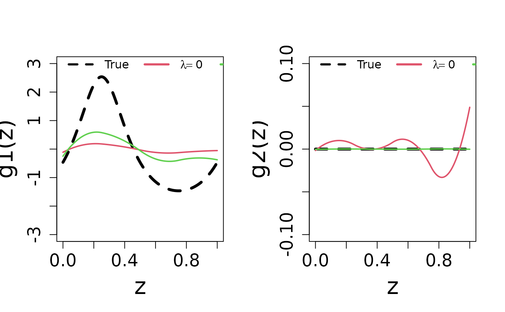
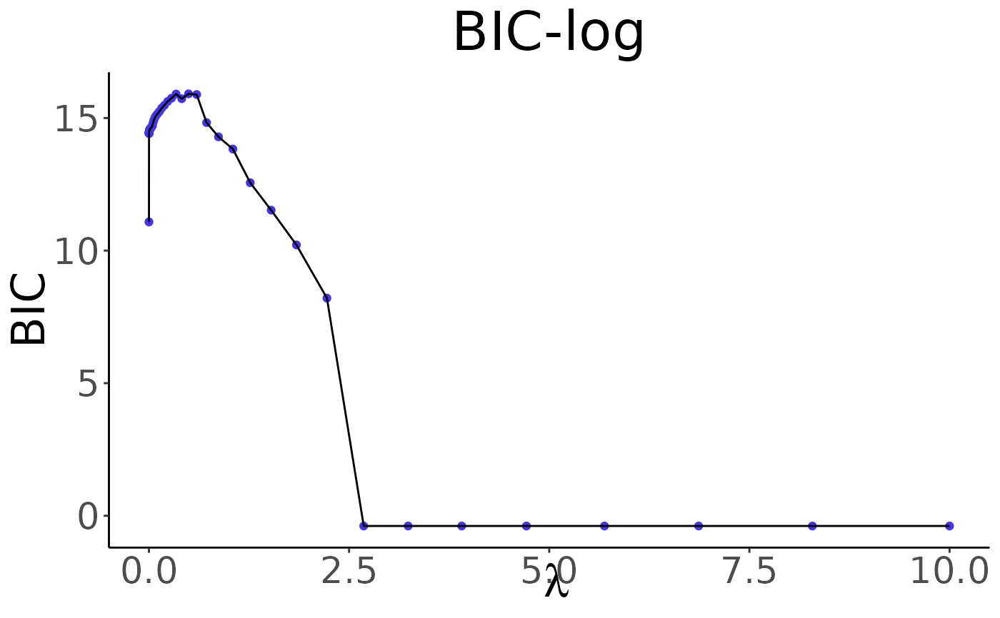
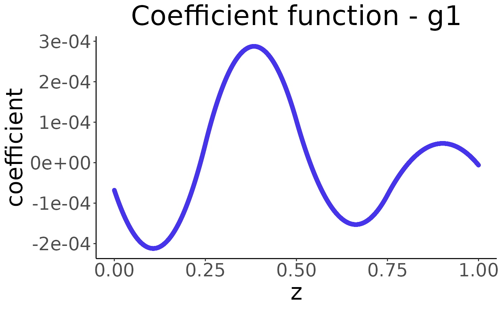

The function qrglasso performs Adaptively Weighted Group Lasso for semiparametric quantile regression models. It estimates the coefficients of a quantile regression model with adaptively weighted group lasso regularization. The algorithm supports the use of B-spline basis functions to model the relationship between covariates and the response variable. Regularization is applied across different groups of covariates, and an adaptive weighting scheme is employed to enhance variable selection.
qrglasso(
Y,
W,
p,
omega = NULL,
tau = 0.5,
qn = 1,
lambda = NULL,
maxit = 1000,
thr = 1e-04
)A \(n \times 1\) data matrix where \(n\) is the sample size.
A \(n \times (p \times L)\) B-spline matrix where \(L\) is the number of groups and \(p\) is the number of covariates.
A numeric indicating the number of covariates.
A \(p \times 1\) weight matrix. Default value is NULL.
A numeric quantile of interest. Default value is 0.5.
A numeric bound parameter for HDIC. Default value is 1.
A sequence of tuning parameters. Default value is NULL.
The maximum number of iterations. Default value is 1000.
Threshold for convergence. Default value is \(10^{-4}\).
A list with the following components:
gammaA target estimate.
xiAn auxiliary estimate in the ADMM algorithm.
phiAn auxiliary estimate in the ADMM algorithm.
BICA sequence of BIC values with respect to different lambdas.
lambdaA sequence of tuning parameters used in the algorithm.
LThe number of groups.
omegaA \(p \times 1\) weight matrix used in the algorithm.
Toshio Honda, Ching-Kang Ing, Wei-Ying Wu (2019). Adaptively weighted group Lasso for semiparametric quantile regression models. Bernoulli 225 4B.
# Example: One true non-linear covariate function
# Define the function g1
g1 <- function(x) {
(3 * sin(2 * pi * x) / (2 - sin(2 * pi * x))) - 0.4641016
}
# Set parameters
n <- 100
p <- 50
err_sd <- 0.1 ** 2
tau <- 0.7
# Generate synthetic data
set.seed(1234)
x <- matrix(runif(n * p, min = 0, max = 1), n, p)
error_tau <- rnorm(n, sd = err_sd) - qnorm(tau, sd = err_sd)
y <- g1(x[, 1]) + error_tau
y <- y - mean(y)
# B-spline parameters
total_knots <- 5
degree <- 2
boundaries <- c(0, 1)
xx <- seq(from = 0, to = 1, length.out = total_knots)
knots <- xx[2:(total_knots - 1)]
# Create B-spline matrix W
L <- total_knots + degree - 1
bspline_results <- lapply(1:n, function(i) orthogonize_bspline(knots, boundaries, degree, x[i, ]))
W <- matrix(
t(sapply(bspline_results, function(result) sqrt(L) * result$bsplines[, -1])),
ncol = p * (L - 1),
byrow = TRUE
)
# Perform quantile regression with group Lasso
n_lambda <- 10
max_lambda <- 10
lambda <- c(0, exp(seq(log(max_lambda / 1e4), log(max_lambda), length = (n_lambda - 1))))
result <- qrglasso(as.matrix(y), W, p)
#> All values of gamma are zeros when lambda > 2.6827
#>
# BIC Results
plot(result)


# Prediction
estimate = predict(result, top_k = 1)
plot(estimate)

#> Warning: calling par(new=TRUE) with no plot
#> Warning: calling par(new=TRUE) with no plot